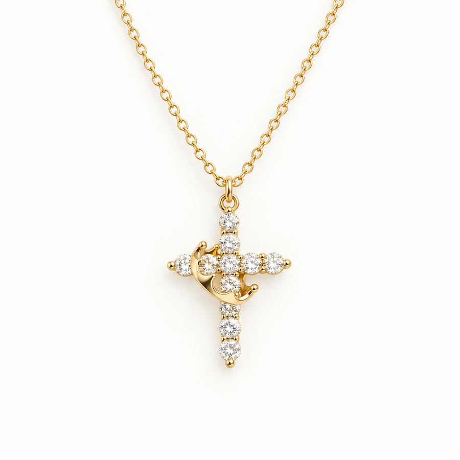
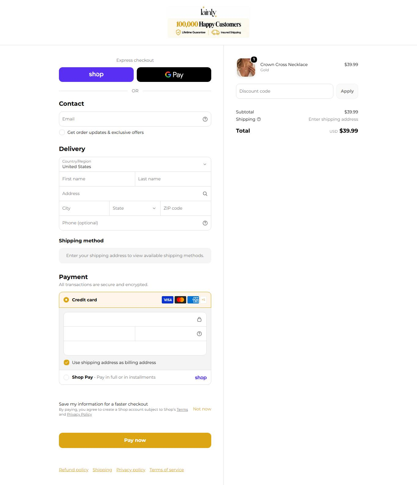

Lainly MODELAR
O ângulo "she'll never forget it" e a pulseira combinando como brinde. O prazo de 9 a 20 dias é o ponto fraco para presente com data: é onde a sua loja ganha com envio dos EUA.
01Produto campeão

Crown Cross Necklace
$39.99
Ticket de referência da loja: $39.99 observado
64 produtos (mediana $39,99): colares de cruz com pérola, coroa, inicial, pedra do mês; 22 itens religiosos
02Mídia paga
447
anúncios ativos auditados
observado · Meta Ads, page_id
447
histórico total
igual aos ativos na Biblioteca
observado · Meta Ads, ALL
não obtido
Sobrevivência
histórico igual aos ativos na Biblioteca
observado
anuncia no Google
Google Ads
observado · Transparency Center
| Ritmo de criativo | Valor |
|---|---|
| Anúncios por dia | rajada: 50 anúncios criados no mesmo minuto em 04/10/2026 |
| Criativos únicos | 1 título na amostra de 50 |
| Duplicação | ~50x na amostra |
| Mix de formato | vídeo: 8 de 8 na extração (UGC de presente) |
| Longevidade do anúncio mais antigo ativo | 387 dias (desde 18/09/2025) |
| Momentum da operação | estável/crescendo: anúncio de presente "She'll Cherish This Forever" no ar há 387 dias; 447 ativos (470 em 09/10) |
Ranking de criativos vencedores
| # | Criativo (título real) | Dias no ar | Link |
|---|---|---|---|
| 1 | "She'll Cherish This Forever" | 387 dias | Biblioteca de Anúncios ↗ |
| 2 | "Free Matching Bracelet" | 280 dias | Biblioteca de Anúncios ↗ |
| 3 | "BUY 1 GET 2 FREE" | 270 dias | Biblioteca de Anúncios ↗ |
03Tráfego
47K
Tráfego real (SimilarWeb · 10/2026)
coletado em 2026-10-09 (pesquisa Joias Cristãs)
observado · SimilarWeb · 10/2026
50.26%
rejeição
observado · SimilarWeb
3.14
páginas por visita
observado · SimilarWeb
00:01:17
duração média
observado · SimilarWeb
Divisão pago/orgânico não obtidoo SimilarWeb público não mostra essa aba.
04Faturamento estimado e investimento em mídia
$34,959
Faturamento mensal estimado (central)
visitas x conversão do setor (1.86%) x ticket
inferido
$17,480
piso
inferido
$52,439
teto
inferido
$3,167
mídia/mês estimada
9,06% da receita (IRP)
inferido
Selo de confiança do faturamento: estimado incerto (visitas medidas, conversão e ticket aplicados). Investimento em mídia = faturamento x 9,06% (CPA do setor). Benchmark do setor (IRP ago/2026): conversão 1,86%, CPA 9,06% da receita. CPM $9,23 e CPC $0,45 (referência Meta, vestuário).
05Páginas da loja
Home

PDP · Crown Cross Necklace

Carrinho com item

06Anatomia do vencedor
| Elemento | Decodificado |
|---|---|
| Big idea | Um presente de fé que ela nunca vai esquecer. |
| Mecanismo | Cruz + coroa em aço banhado, à prova d'água, garantia vitalícia. |
| Hook | "She won't expect it, but she'll never forget it" |
| Presell | Não achado: direto à PDP com "compre 1 leve 3" e contador. |
| Objeção principal | "Vai esverdear?", respondida num FAQ sob o botão. |
| Ângulos ativos (títulos reais) |
|---|
| "She'll Cherish This Forever" |
| "BUY 1 GET 2 FREE" |
| "Free Matching Bracelet" |
Momentum da operação: estável/crescendo: anúncio de presente "She'll Cherish This Forever" no ar há 387 dias; 447 ativos (470 em 09/10).
cruzamento alegação x idadeProva social: A PDP diz "Loved by 87,000+ Christian Women" com a loja aberta em ago/2025. Não verificável: não copie.
07Catálogo e stack
- Plataforma
- Shopify
- Apps
- Klaviyo, Clarity, Bold, Snap, TikTok
- Pixel da Meta
- não obtidoID não exposto no HTML lido
- Catálogo
- 64 produtos (mediana $39,99): colares de cruz com pérola, coroa, inicial, pedra do mês; 22 itens religiosos
- Redes
- @lainlybrand, 31 mil seguidores
- Frete
- grátis; 2 a 5 dias de processamento + 7 a 15 dias úteis
- Garantia
- garantia vitalícia contra escurecer/quebrar
- Prazo e BNPL
- 9 a 20 dias no total (vale a pena para presente com data só pedindo cedo)
- Troca
- 30 dias
- Sinal de fornecedor
- endereço comercial é caixa postal (Rio Rancho, NM); entrega de 7 a 15 dias úteis, típico de envio da China
- Reviews
- contagem verificada não obtida; PDP alega "15,356 reviews"
o que copiarO ângulo "she'll never forget it" e a pulseira combinando como brinde. O prazo de 9 a 20 dias é o ponto fraco para presente com data: é onde a sua loja ganha com envio dos EUA.
08Dados não obtidos
| Dado | Motivo | Método tentado |
|---|---|---|
| Visitas atuais | SimilarWeb bloqueou o IP hoje; usado o número de 09/10/2026 | trafego.js |
| Reviews verificados | sem JSON-LD | reviews.mjs |
| Histórico separado | ALL = ACTIVE; INACTIVE = 0 | page_id |
09Veredito
DROPSHIP DE MARCA
modelo
inferido
MODELAR
veredito
inferido
NÍVEL INICIANTE
nível (10/12)
calculado
CONSTRUÍVEL
defensabilidade
inferido
| Eixo do scorecard | Pontos |
|---|---|
| Sourcing simples | 2/2 |
| Ticket fecha sem escada complexa | 1/2 |
| Criativo simples de produzir | 2/2 |
| Mecanismo com urgência | 2/2 |
| Investimento de entrada baixo | 2/2 |
| Sem dependência de autoridade de marca | 1/2 |
| Total | 10/12 |
Fontede onde veio
Meta Ads, products.json, prints, reviews.observado
Observaçãoo que foi visto
estável/crescendo: anúncio de presente "She'll Cherish This Forever" no ar há 387 dias; 447 ativos (470 em 09/10)observado
Interpretaçãoo que isso sugere
Um presente de fé que ela nunca vai esquecer.inferido
Decisãoo que a régua diz
MODELAR · DROPSHIP DE MARCA · nível INICIANTEcalculado
Próxima açãoo que fazer agora
O ângulo "she'll never forget it" e a pulseira combinando como brinde. O prazo de 9 a 20 dias é o ponto fraco para presente com data: é onde a sua loja ganha com envio dos EUA.recomendado